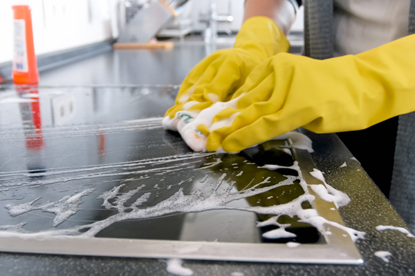

At Clean Touch, we believe that a true clean space is a healthy and renewing one. While standard cleaning keeps the space tidy, we go beyond that to ensure a deep clean that promotes well-being.
-

- Kitchens:We degrease stove tops and back splashes, scrub and disinfect sinks, and thoroughly clean the interior and exterior of equipment such as ovens, microwaves, and refrigerators. We will also clean the cabinet exteriors and baseboards to guarantee that no detail is ignored.
- Bathrooms:We focus on sanitation and disinfection. This includes washing grout lines, cleaning and descaling shower heads and faucets, sanitizing toilets, and polishing mirrors and fixtures until they shine.
- Living Area & Bedrooms:Our staff will clean the light fixtures, wipe down all surfaces, and properly dust the curtains and window sills. We invest extra attention to places that are generally overlooked, such as door frames, skirting boards, and corners where dust tend to hide.
- Flooring:We do more than sweeping and mopping. We will remove solid dirt from the edges and corners, and we will apply specific solutions to restore the shine to hard floors.
- Vehicle exterior and interior:Since your automobile is an extension of who you are, it should be treated with the same respect. We'll vacuum every surface, steam clean and wash upholstery and carpets to get rid of tough stains and smells, and carefully clean and condition any leather, vinyl, and plastic surfaces. In order to leave the interior of your car smelling clean and new, we will also thoroughly clean the outside, door jambs, air vents, and other difficult-to-reach areas.


our products are pet and eco friendly.